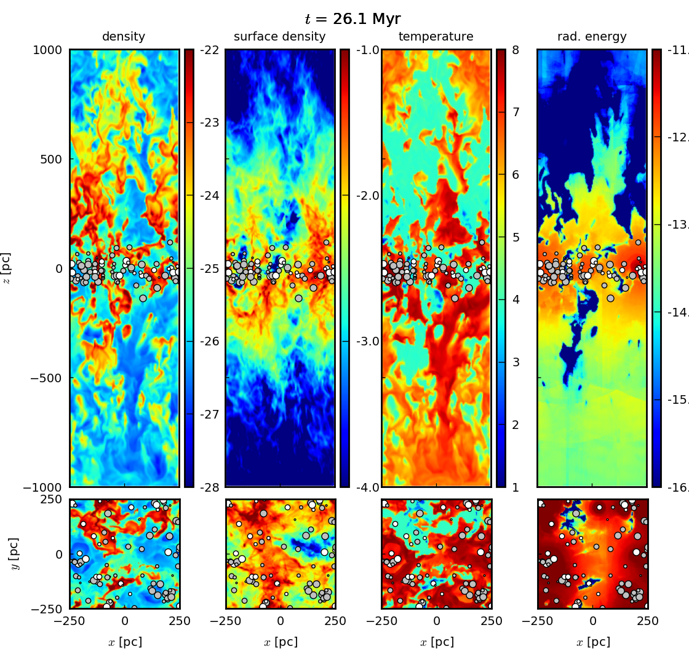

Highlight of the month

January, 2018
Synthetic [CII] line emission maps of a simulated molecular cloud along different projections.
Color coded is the intensity integrated over a velocity range of +/- 20 km/s.
The underlying simulation has a maximum spatial resolution of dx=0.122pc and is part of the zoom-in simulations published by Seifried et al. 2017.
Simulations by Annika Franeck.
Synthetic [CII] line emission maps of a simulated molecular cloud along different projections.
Color coded is the intensity integrated over a velocity range of +/- 20 km/s.
The underlying simulation has a maximum spatial resolution of dx=0.122pc and is part of the zoom-in simulations published by Seifried et al. 2017.
Simulations by Annika Franeck.

December, 2017
Density snapshots of the turbulent box (left) and colliding flow (right) simulations. Simulations by Prabesh Joshi.
Density snapshots of the turbulent box (left) and colliding flow (right) simulations. Simulations by Prabesh Joshi.

November, 2017
A slice through a disc of a spiral galaxy taken from SILCC simulations. The galaxy is gas rich, contains approximately ten times higher surface density of gas than the Galaxy leading to very high star formation rate. Young star clusters are modelled by sink particles, and are represented by white (younger than 8 Myr) and grey (older than 8 Myr) circles. The clusters contain young stars, which drive stellar winds, explode as supernovae, and ionise the interstellar medium. These feedback processes and cluster formation are simulated self-consistently. The panels depict from left to right: density, surface density, temperature and the volume energy of ionising radiation (in logarithm in cgs units). The normal to the galaxy points in direction y. The modelled ISM develops all three phases observed in the real ISM: the hot phase in bubbles around young clusters and in streams out of the galactic disc, the warm phase of 'Swiss cheese' structure, and the cold phase in the form of molecular clouds condensing of the densest gas.
A slice through a disc of a spiral galaxy taken from SILCC simulations. The galaxy is gas rich, contains approximately ten times higher surface density of gas than the Galaxy leading to very high star formation rate. Young star clusters are modelled by sink particles, and are represented by white (younger than 8 Myr) and grey (older than 8 Myr) circles. The clusters contain young stars, which drive stellar winds, explode as supernovae, and ionise the interstellar medium. These feedback processes and cluster formation are simulated self-consistently. The panels depict from left to right: density, surface density, temperature and the volume energy of ionising radiation (in logarithm in cgs units). The normal to the galaxy points in direction y. The modelled ISM develops all three phases observed in the real ISM: the hot phase in bubbles around young clusters and in streams out of the galactic disc, the warm phase of 'Swiss cheese' structure, and the cold phase in the form of molecular clouds condensing of the densest gas.